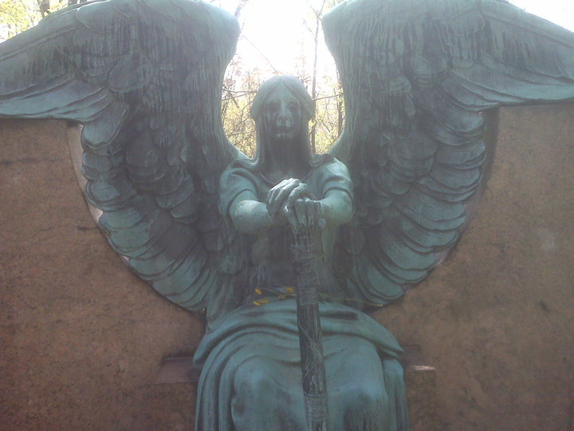
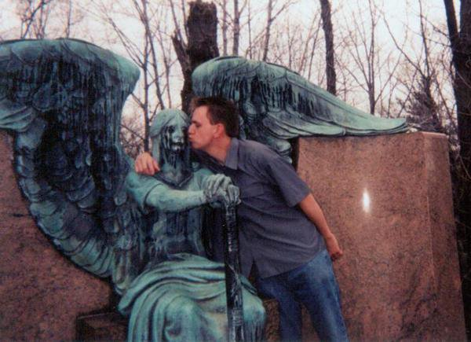

Forgotten Ohio: Wednesday, May 16, 2018
Forgotten Ohio
Wednesday, May 16, 2018
Back in Columbus
After four years in Dayton I am back in Columbus and actually getting a lot done. It has been a long time since my last update--a year, actually--largely because some bad things happened in my life. The worst was that my father died on October 19, 2017. It's hard to write about, honestly. His name was Larry Henderson and he died in nursing care at the age of 80. So it wasn't unexpected, but it was and is quite painful. My dad was a very kind person who never laid a hand on me in anger and was always there for me in every way. I miss him very much.
But it's been far too long since I did maintenance on the website, and since it's something I love doing I decided to get serious about it. As even a cursory examination shows, a lot of information on here is out of date. It's the nature of the beast, I suppose, that abandoned buildings get knocked down or (ideally) renovated, and I've gotten plenty of status reports that I need to use to make everything current. I've done about a third of that work over the last week and it should be done soon enough.
Next year Forgotten Ohio will be 20 years old. That makes it older than Google, Facebook, and YouTube, to name the three biggest examples. I'm hoping to do a light redesign, which includes a new version of this, my main logo:
I made it in 2000, from one of the variations on the font College--College Narrow maybe? Not sure if it's all caps or if that matters in College. And then I ran the title image through a filter in Adobe Photoshop that I have definitely forgotten how to find. I still like it, but I'd rather have an updated version done in a more original font--something slightly larger, maybe bulging out a bit so it looks more dynamic. If you're proficient with graphic design of this sort, and you'd like to tweak my title image, please do drop me a line.
Here's a great urban exploring group to check out on Facebook: Once Occupied. Incredible photography and ambitious expeditions make it the best I've seen in years.
Finally, I have a request for advice: Does anyone know a good electrician who could answer a few questions for me? I'm in the middle of a project dealing with an unoccupied house and I'm pretty lost. If so, please drop me a line. Thanks!
The Angel of Death and YOU

Mortuary art simply doesn't get any better than the nightmarish guardian of the Haserot family plot at Haserot Death Angel, is so irresistible that seemingly every twisted tourist takes at least one photo posing with her. I've been shown more than I can count.

Hey look, that's me. I mostly keep my goofy-ass self off the website, even when I'm in a magazine article or something, but in this case I'll use my own example to get things started. Send me your own Haserot pictures--pictures of you and/or others posing with the Angel of Death herself--and I will post them in the new gallery I'm creating. I'd like to include names and hometowns, but will of course leave anyone anonymous if they prefer.
I'm on Facebook; so are you. It's the law. Please do check out the Forgotten Ohio Group. I didn't create it, but it's amazing and contains material by me and others, and plenty of stuff not found on the website.
And here's my personal Facebook info:
Andy Henderson
I am reading:
FICTION - Night Film, by Marisha Pessl
NONFICTION - Fire and Fury, by Michael Wolff
Recent Updates
March 31, 2014: Back From the Dead
Previous Site Updates
Back